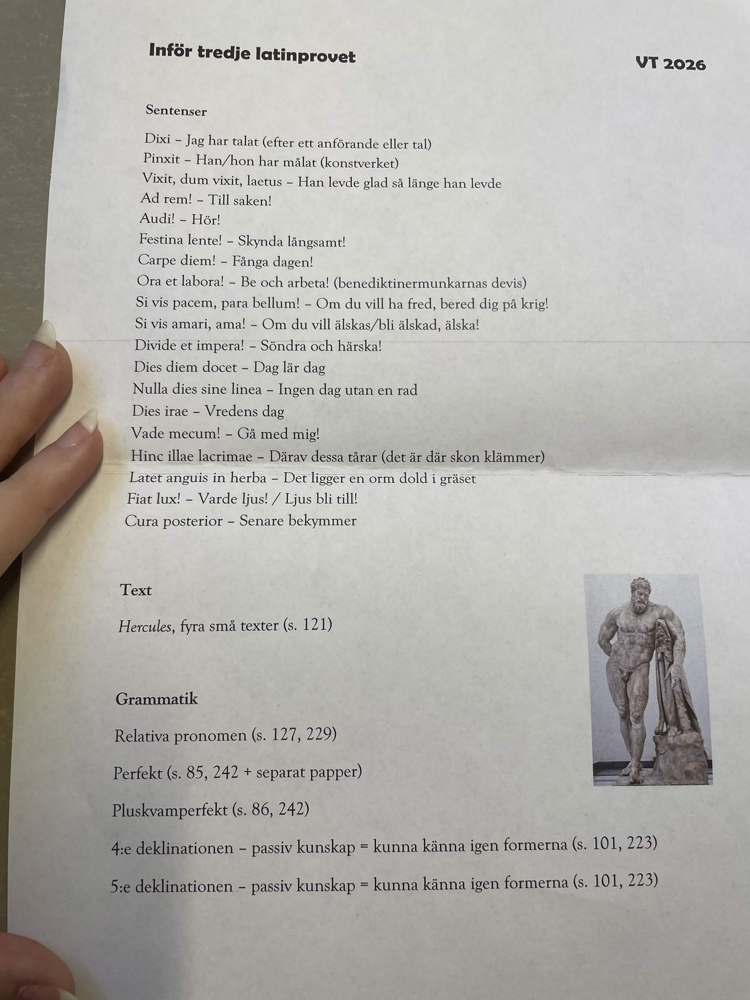

Hercules, sentenser, pronomen, perfekt och passiv igenkänning
Guiden följer provbladet: sentenser, Hercules-texten, relativa och interrogativa pronomen, perfekt, pluskvamperfekt samt 4:e och 5:e deklinationen som passiv kunskap.

OK Rätt svar: --
Tid Tid: --:--
Poäng Poäng: ----
Den svåra riktningen är svenska till latin. Läs först betydelsen, täck över latinet, skriv frasen, och kontrollera sedan.
Carpe diem!
Festina lente!
Si vis pacem, para bellum!
Divide et impera!
Nulla dies sine linea.
Hinc illae lacrimae.
Textdelen blir lättare om du kan återberätta varje stordåd på svenska och sedan översätta de centrala latinska raderna.
Prope oppidum Nemeam erat leo saevus...
Vid Nemea fanns ett vilt lejon som hade skrämt området i många år. Pilar kunde inte döda det, så Hercules slog det med sin klubba och ströp det med händerna. Sedan bar han lejonhuden som mantel.
Nyckelord: `leo`, `sagittis`, `pellis`, `clava`, `manibus`.
Hydra Lernaea erat monstrum horribile...
Hydran hade nio huvuden och bodde i ett träsk. När Hercules högg av ett huvud växte två nya ut. Iolaus brände såren med en fackla så att nya huvuden inte kunde växa.
Nyckelord: `capita`, `palude`, `Iolao`, `facem`, `vulnera`.
Augeas, rex Elidis, magnum stabulum habebat...
Augeas hade ett enormt stall med mer än tusen djur. Ingen hade rengjort det på trettio år. Hercules ledde två floder genom stallet och tvättade bort all smuts på en dag.
Nyckelord: `stabulum`, `boves`, `flumina`, `aquam`, `uno die`.
Non procul ab oppido Stymphalo erat lacus...
Vid Stymphalos fanns en sjö med farliga fåglar. De hade bronsnäbbar och järnfjädrar. Hercules skrämde dem med skallror och dödade dem med pilar.
Nyckelord: `lacus`, `aves`, `rostra`, `pennas`, `sagittis`.
Platsen för lejonet.
Platsen för hydran.
Hercules följeslagare vid hydran.
Kung i Elis med det smutsiga stallet.
Platsen med de farliga fåglarna.
Guden som gjort skallrorna av koppar.
Arbeta med exakt samma rader som i textdelen: hitta verbets tempus, pronomenets funktion och kasusets roll i meningen.
leo saevus, qui multos annos incolis terrae terrorem iniecerat
`qui` syftar på `leo`: maskulinum singular nominativ. `iniecerat` är pluskvamperfekt: hade injagat.
sagittis magicis, quas Apollo deus ei dederat
`quas` syftar på `sagittis`: femininum plural ackusativ i bisatsen. `dederat` är pluskvamperfekt.
Hydra Lernaea erat monstrum horribile, quod novem capita habebat
`quod` syftar på `monstrum`: neutrum singular nominativ. `habebat` är imperfekt.
lacus, in quo aves horribiles habitabant
`in quo` är ablativ efter `in` när betydelsen är befintlighet: i vilken.
erat, habebat, habitabat, gerebat, edebant
Bakgrund, vana eller pågående handling: var, hade, bodde, bar, åt.
percussit, strangulavit, abscidit, ussit, superavit, purgavit
Avslutade händelser: slog, ströp, högg av, brände, besegrade, rengjorde.
iniecerat, temptaverant, dederat, purgaverat
Något som redan hade hänt: hade injagat, hade försökt, hade gett, hade rengjort.
Välj först rätt pronomenform. Motivera sedan med huvudordets genus och numerus samt pronomenets funktion i bisatsen.
Huvudordet bestämmer genus och numerus. Relativpronomenets funktion i bisatsen bestämmer kasus.
| Mask. | Fem. | Neutr. | |
|---|---|---|---|
| Nom. sg. | qui | quae | quod |
| Gen. sg. | cuius | cuius | cuius |
| Dat. sg. | cui | cui | cui |
| Ack. sg. | quem | quam | quod |
| Abl. sg. | quo | qua | quo |
| Nom. pl. | qui | quae | quae |
| Gen. pl. | quorum | quarum | quorum |
| Dat. pl. | quibus | quibus | quibus |
| Ack. pl. | quos | quas | quae |
| Abl. pl. | quibus | quibus | quibus |
| # | Mening med svar | Varför? |
|---|---|---|
| 1 | Liber, quem in manu habes | `liber`: mask. sg.; direkt objekt i bisatsen. |
| 2 | Templa, quae ibi sunt | `templa`: neutr. pl.; subjekt. |
| 3 | Urbs, in qua sumus | `urbs`: fem. sg.; ablativ efter `in` vid befintlighet. |
| 4 | Mulieres, quae hic sunt | `mulieres`: fem. pl.; subjekt. |
| 5 | Libri, quos legimus | `libri`: mask. pl.; direkt objekt. |
| 6 | Vir, cui librum do | `vir`: mask. sg.; indirekt objekt. |
| 7 | Servus, qui in agro laborat | `servus`: mask. sg.; subjekt. |
| 8 | Pueri, quibus libros damus | `pueri`: mask. pl.; dativ plural. |
| 9 | Magistri, qui ibi sunt | `magistri`: mask. pl.; subjekt. |
| 10 | Terrae, in quibus sunt | `terrae`: fem. pl.; ablativ plural efter `in`. |
| 11 | Puellae, quas amamus | `puellae`: fem. pl.; direkt objekt. |
| 12 | Navis, quam aedificamus | `navis`: fem. sg.; direkt objekt. |
| 13 | Templum, quod hic est | `templum`: neutr. sg.; subjekt. |
| 14 | Fora, quae videmus | `fora`: neutr. pl.; direkt objekt. |
| 15 | Via, quae valde longa est | `via`: fem. sg.; subjekt. |
| 16 | Vinum, quod potamus | `vinum`: neutr. sg.; direkt objekt. |
| 17 | Puellae, quarum mater | `puellae`: fem. pl.; genitiv: vilkas. |
| 18 | Puer, cuius pater | `puer`: mask. sg.; genitiv: vars. |
| # | Fråga | Översättning och kasus |
|---|---|---|
| 1 | Quis est ille vir? | Vem är den där mannen? `quis`: nominativ, subjekt. |
| 2 | Quos pueros amant puellae? | Vilka pojkar älskar flickorna? `quos`: ack. mask. pl., objekt. |
| 3 | Qui vir est pater tuus? | Vilken man är din far? `qui`: nom. mask. sg. |
| 4 | Quas puellas amant pueri? | Vilka flickor älskar pojkarna? `quas`: ack. fem. pl. |
| 5 | Quae sunt illae mulieres? | Vilka är de där kvinnorna? `quae`: nom. fem. pl. |
| 6 | Quam puellam amas? | Vilken flicka älskar du? `quam`: ack. fem. sg. |
| 7 | Qui sunt illi viri? | Vilka är de där männen? `qui`: nom. mask. pl. |
| 8 | Quem vides? | Vem ser du? `quem`: ackusativ, objekt. |
| 9 | Quae mulier est mater tua? | Vilken kvinna är din mor? `quae`: nom. fem. sg. |
| 10 | Quod forum est Forum Romanum? | Vilket forum är Forum Romanum? `quod`: nom. neutr. sg. |
| 11 | Cui donum das? | Åt vem ger du gåvan? `cui`: dativ, indirekt objekt. |
| 12 | Quibus donum datis? | Åt vilka ger ni gåvan? `quibus`: dativ plural. |
Perfekt säger att något hände eller har hänt. Pluskvamperfekt säger att något hade hänt.
Mönster: perfektstam + personändelse.
vocāv-i, vocāv-istī, vocāv-it, vocāv-imus, vocāv-istis, vocāv-ērunt
Översättning: har kallat eller kallade.
Mönster: perfektstam + -era- + personändelse.
vocāv-eram, vocāv-erat, vocāv-erant
Översättning: hade kallat.
Perfekt particip + form av `esse`: vocātus est = han blev/har blivit kallad.
| Märke | Vanligast i | Exempel |
|---|---|---|
-v- | 1:a och 4:e konj. | vocāv-i, audīv-i |
-u- | 2:a konj. | monu-i |
-s- | 3:e konj. | rex-i från reg-s-i |
| inget märke | 3:e konj. | vanligt i flera oregelbundna stammar |
Han/hon kallade eller har kallat.
De förmanade eller har förmanat.
Han/hon hade styrt.
De hade hört.
Provbladet säger passiv kunskap. Målet är att känna igen formerna och inte blanda ihop dem med 2:a eller 3:e deklinationen.
Ofta maskulina på -us: fructus. Neutrala på -u: cornu.
Typiska signaler: fructūs, fructuum, fructibus, cornua.
Kom ihåg feminina undantag: domus, manus.
Få substantiv. Exempel: res sak, dies dag.
Typiska signaler: rei, rem, re, rerum, rebus.
dies är maskulinum, men femininum i betydelsen utsatt dag/förfallodag.
4:e deklinationen, dativ/ablativ plural.
5:e deklinationen, dativ/ablativ plural.
4:e deklinationen neutrum plural, nom./ack.
Det här är inte huvudspåret, men det hjälper dig att motivera pronomenformer och översätta Hercules-rader.
Subjekt: gör eller är något.
Direkt objekt: det som påverkas av verbet.
Indirekt objekt: den som får något eller berörs.
Adverbial: tid, plats, sätt, medel.
ad + ack: till
prope + ack: nära
cum + abl: med
ex/e + abl: ur, från
in + ack/abl: riktning eller befintlighet
is, ea, id = den, denna, han, hon, det.
eum, eam, id används när formen är direkt objekt.
ei = åt honom/henne/det.
ille, illa, illud = den där.
Det här speglar provbladet: sentenser, Hercules, pronomen, tempus och passiv igenkänning av 4:e/5:e deklinationen.
Skriv korta svar. Accenter, skiljetecken och stora/små bokstäver spelar ingen roll; innehållet gör det. Frågor med flera delar rättas som separata delpoäng.
Quizet blandar sentenser, Hercules, pronomen, tempus, deklinationer och stödfrågor. Produktionsfrågor är formulerade så att du först bör tänka fram svaret innan du tittar på alternativen.